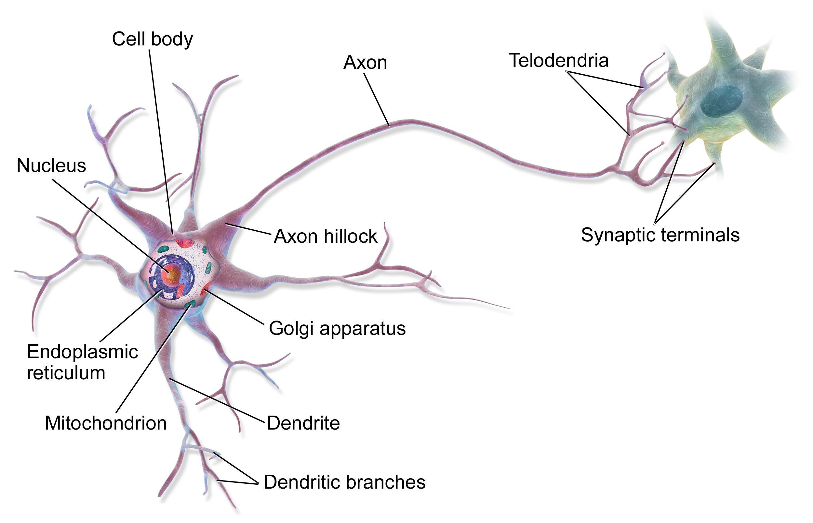

Neurogenetic Webinar Series
Gene Expression and Brain Function
...from code to consequence
by Phelelani Mpangase, PhD
...in the next 30 minutes
...in the next 30 minutes
Explain the Central Dogma of Molecular Biology in one sentence
Describe what "gene expression" is and why cells expresses different sets of genes
Connect gene expression to real brain function and diseases you see in everyday
Same DNA. Different cells. Why?
Every cell in your body contains the same DNA
...but how much of it is actually switched on in a typical cell?
Poll 1 — hands up!
- About 1% — almost everything is off
- About 10%
- About 25% - 50%
- All of it — every gene, all the time
...a typical cell is actively using a large share of its ~20,000 genes,
but which ones and how much is what makes it that particular type of cell!!
Why should clinicians care about gene expression?
Every ion channel firing an action potential, every receptor receiving a signal, and every enzyme making serotonin.
If every cell has the same DNA... why are cells different?
The answer is the most important idea in Molecular Biology - the Central Dogma:
(full recipe book)
copying a recipe
(one recipe)
building the product
(does the actual job)
How does DNA become function?
What is a gene?
Stretch of DNA that carries a recipe for one protein
Humans have about 20,000 protein-coding genes
Each recipe has control switches in front of it
Every cell owns the same book, but reads different page — different bookmarks in each cell type.
How does a recipe become a working machine?
the cell decides to read this recipe
DNA is copied into messenger RNA (mRNA)
the mRNA is read, amino acid by amino acid
channel, receptor, enzyme, scaffold
Expression level:
- how many mRNA copies are made
- volume knob, not just on/off
More mRNA:
- more protein
- more of that function

Less mRNA:
- less protein
- less of that function
...so then what of "Gene Expression"?
and how much of that product is being made at a given moment.
Housekeeping genes:
Expressed in nearly every cell (basic energy, cell structure)
Cell-specific genes:
Expressed only in certain cells
e.g., insulin, haemoglobin, neurotransmitter
Expression changes over time:
Development, learning, stress, sleep, disease, etc...
Who controls the switches?
Promoters:
the "start here" sign directly in front of each gene
Transcription factors:
proteins that bind switches and turn genes up or down
Enhancers:
remote-control switches that can sit far away from the genes
This layer is epigenetics, and consist of chemical marks that decide whether the switches can even be reached.
What happens when there's fault in the switches?
What happens when there's fault in the switches?
Clinical story 1
- MECP2 does not build a structural protein... it is a regulator of gene expression
- It reads chemical marks on the DNA and adjusts other genes
- One faulty regulator:
- hundreds of downstream genes expressed at the wrong levels
- neurons fail to mature properly
- Lesson: the control system itself can be the disease
Why does gene expression matter to the brain?
{kind=link}
- Neurons are among the most complex cells in the body
— and most are never replaced - The brain has one of the richest transcriptomes of any organ
— a huge share of your genes is active there - Neurons must keep proteins working for decades
— expression must be maintained, precisely, continuously - and uniquely: in the brain, expression responds to experience
What is a neuron actually made of?
Every functional part of a neuron is a protein that a gene expressed...

https://en.wikipedia.org/wiki/Multipolar_neuron#/media/File:Blausen_0657_MultipolarNeuron.png
{kind=link}
- Ion channels
— generate electrical signals - Receptors
— receive chemical messages - Enzymes
— synthesize neurotransmitters (e.g. dopamine, serotonin) - Synaptic proteins
— release and recycle transmitters - Structural & support proteins
— keep the cell alive and wired
How does gene expression become a thought?
Follow one signal across a synapse... every step is an expressed protein doing its job:
Na⁺ channels open — the electrical spike
through voltage-gated channels
synaptic proteins release transmitter
the next neuron is excited or inhibited
{kind=link}
- Change the number of channels expressed
— change how easily the neuron fires - Change the type of receptor expressed
— change what the neuron responds to - Expression levels tune the excitability of the brain
- A voltage-gated sodium channel
— the protein behind the spike
— mutations in its gene (SCN1A) cause severe epilepsy
— Dravet syndrome.
Can the correct gene, wrongly expressed, cause disease?
Clinical story 2
{kind=link}
- The gene is present and transcribed normally
- The problem is the protein product itself:
— an expanded, misfolded huntingtin
— poisons neurons, especially in the striatum
— distorts the expression of many other genes - Lesson: disease can come from what a gene expresses, not only how much
Too much, too little, or at the wrong time?
Across neurogenetics, one principle keeps appearing — "expression dosage":
Too little:
loss of one working copy
- MECP2 in Rett syndrome
- SMN1 in spinal muscular atrophy
Too much:
extra copies: gene duplications
- PMP22 duplication in CMT1A neuropathy
- extra chr21 in Down syndrome
Wrong time:
a gene expressed during the wrong developmental window disrupts brain wiring
Can the brain change its own gene expression?
Which of these do you think changes gene expression
in the brain?
Poll 2 — hands up!
a) A good night's sleep
b) Exercise
c) Antidepressants
ALL OF THE ABOVE!
Sleep, exercise, drugs, stress — even a good conversations — all leave traces in various genes your neurons are expressing!
Can your experiences change your brain's gene expression?
Clinical story 3 — everyday practice
- Activity-dependent expression:
— "neurons that fire together"
— turn on genes that wire together
— the molecular basis of learning and memory - Exercise, sleep and enrichment raise BDNF expression
- Chronic stress and sleep loss lower it
- Even your body clock is gene expression:
— clock genes (CLOCK, PER) run a ~24-hour cycle
— jet lag is your clock genes re-syncing
Can we actually measure/see gene expression?
RNA sequencing (RNA-seq)
If the switches control the genes...
What decides whether a switch can be reached?
Poll 3 — one last question
- The DNA sequence itself
— it is all written in the letters - Chemical marks sitting on top of the DNA
— which can change during life, without changing the letters
...that layer is "epigenetics"
We have been doing DNA - RNA - protein. Expression is the volume knob of the brain.
We are going to show you the control layer above the genes... epigenetics and brain function.
Remember these three things...
Remember these three things...
The Central Dogma:
DNA RNA Protein
archive copy worker
Gene expression:
"Volume knob"
Different expression in every cell
Brain function:
Expressed proteins
channels, receptors, enzymes
Above the genes sits another control layer: "The Epigenetics"
Dr. Luicer Ingasia will tell you more...